2021年北京市中考物理试题 原卷解析
2021年北京市中考物理试卷
参考答案与试题解析
一、单项选择题(下列每题均有四个选项，其中只有一个选项符合题意。共24分，每题2分)
1．作为国际通用测量语言的国际单位制，极大地方便了国际交流。在国际单位制中，质量的单位是（ ）
A．千克B．牛顿C．焦耳D．瓦特
【分析】质量的国际单位是千克，符号是kg。
【解答】解：A、千克是质量的国际单位，故A正确。
B、牛顿是力的国际单位，故B错误。
C、焦耳是能量的国际单位，故C错误。
D、瓦特是功率的国际单位，故D错误。
故选：A。
【点评】物理学中各个物理量都有自己的符号和国际单位，不要将各符号和各单位相互混淆。
2．下列四种用电器中，利用电流热效应工作的是（ ）
A．电冰箱B．电视机C．电脑D．电热水壶
【分析】当电流通过电阻时，电流做功而消耗电能，产生了热量，这种现象叫做电流的热效应。根据各用电器的能量转化可做出判断。
【解答】解：电冰箱在工作时，电能主要转化为机械能；电视机、电脑在工作时，主要将电能转化为光能和声能；
电热水壶将电能转化为热能，是利用电流的热效应，故D正确。
故选：D。
【点评】本题主要考查了电流的热效应、电能和其它形式能的相互转化，是一道基础题。
3．如图所示的四种用品中，通常情况下属于导体的是（ ）
A． 金属勺B．
金属勺B． 瓷碗
瓷碗
C． 塑料盒D．
塑料盒D． 木铲
木铲
【分析】从定义上看，善于导电的物体叫导体，不善于导电的物体叫绝缘体。
【解答】解：在通常情况下瓷碗、塑料盒、木铲都不善于导电，是绝缘体，金属勺是由金属材料制成的，属于是导体。
故选：A。
【点评】了解生活中常见的物体哪些是导体，哪些是绝缘体，有一定的现实意义。
4．如图所示的四个实例中，为了减小摩擦的是（ ）
A． 汽车轮胎上刻有花纹B．
汽车轮胎上刻有花纹B． 瓶盖上刻有竖条纹
瓶盖上刻有竖条纹
C． 脚蹬面做得凹凸不平D．
脚蹬面做得凹凸不平D． 储物箱下装有滚轮
储物箱下装有滚轮
【分析】（1）增大摩擦力的方法：在接触面粗糙程度一定时，通过增大压力来增大摩擦力；在压力一定时，通过增大接触面的粗糙程度来增大摩擦力。
（2）减小摩擦力的方法：在接触面粗糙程度一定时，通过减小压力来减小摩擦力；在压力一定时，通过减小接触面的粗糙程度来减小摩擦力；使接触面脱离；用滚动摩擦代替滑动摩擦。
【解答】解：ABC、汽车轮胎上刻有花纹、瓶盖上刻有条纹、脚蹬面做得凹凸不平，是在压力一定时，增大接触面的粗糙程度来增大摩擦力，故ABC不符合题意；
D、储物箱下装有滚轮，是用滚动代替滑动减小摩擦力，故D符合题意。
故选：D。
【点评】本题在考查影响滑动摩擦力大小的两个因素的同时，也考查了学生运用所学知识分析实际问题的能力，要求学生在生活中多注意观察，并学会应用，增大有益摩擦，减小有害摩擦，使其更好地为人类服务。
5．如图所示的四个实例中，为了增大压强的是（ ）
A． 饮料管的一端剪成斜口B．
饮料管的一端剪成斜口B． 在铁轨下面铺枕木
在铁轨下面铺枕木
C． 书包背带做得较宽D．
书包背带做得较宽D． 图钉帽的面积做得较大
图钉帽的面积做得较大
【分析】①压强大小跟压力大小和受力面积大小有关。
②增大压强的方法：在压力一定时，减小受力面积来增大压强；在受力面积一定时，增大压力来增大压强。
③减小压强的方法：在压力一定时，增大受力面积来减小压强；在受力面积一定时，减小压力来减小压强。
【解答】解：
A、饮料管的一端剪成斜口，是在压力一定时，通过减小受力面积来增大压强的，故A正确；
BCD、在铁轨下面铺枕木、书包背带做得较宽、图钉帽的面积做得较大，是在压力一定时，通过增大受力面积来减小压强的，故BCD错误。
故选：A。
【点评】掌握压强大小的影响因素，掌握增大和减小压强的方法，并能在生活中加以应用，体现了理论和实践相结合。
6．如图所示的四种工具中，正常使用时属于费力杠杆的是（ ）
A．园艺剪B．筷子
C．瓶盖起子D．核桃夹
【分析】结合生活经验，先判断杠杆在使用过程中，动力臂和阻力臂的大小关系，再判断它是属于哪种类型的杠杆。
【解答】解：ACD、园艺剪、瓶盖起子、核桃夹在使用过程中，动力臂大于阻力臂，是省力杠杆，故ACD错误；
B、筷子在使用过程中，动力臂小于阻力臂，是费力杠杆，故B正确。
故选：B。
【点评】此题考查的是杠杆的分类：①省力杠杆，动力臂大于阻力臂；②费力杠杆，动力臂小于阻力臂；③等臂杠杆，动力臂等于阻力臂。
7．下列四个实例中，能够使蒸发加快的是（ ）
A．将水果放在低温冷藏柜中
B．将新鲜的蔬菜封装在保鲜袋中
C．给播种后的农田覆盖地膜
D．将新采摘的辣椒摊开晾晒在阳光下
【分析】影响蒸发快慢的因素有三个：液体的温度、液体的表面积和液体表面的空气流动情况；要想加快蒸发，可以提高液体的温度、增大液体的表面积同时加快液体表面的空气流动情况。
【解答】解：A、将水果放在低温冷藏柜中，降低了温度，减慢了蒸发，故A不合题意；
B、把新鲜的苹果装入塑料袋，是控制了蒸发面积，减慢了液面上方的空气流动，故减慢了蒸发，故B不合题意；
C、用地膜覆盖农田，是控制了蒸发面积，减慢了液面上方的空气流动，故减慢了蒸发，故C不合题意；
D、将新采摘的辣椒摊开晾晒在阳光下，是通过增大表面积、提高温度来加快蒸发的，故D符合题意。
故选：D。
【点评】液体蒸发的快慢是经常考查到的一个知识点，有时还以实验题的形式考查。如：探究液体蒸发的快慢与哪些因素有关，在此实验中同时也考查到了控制变量法的使用。
8．电给我们的生活带来了极大的便利，但不正确用电也会带来很大的危害，甚至会危及生命。安全用电是每一位公民的必备素养。下列做法中不符合安全用电原则的是（ ）
A．在家庭电路中安装保险丝或空气开关
B．在未断开电源开关的情况下更换灯泡
C．不接触低压带电体，不靠近高压带电体
D．及时更换达到使用寿命的插座、导线和家用电器
【分析】（1）家庭电路中必须要有保险丝或空气开关；
（2）更换灯泡、移动用电器之前必须断开开关，防止发生触电事故；
（3）安全用电的原则：不接触低压带电体，不靠近高压带电体；
（4）插座、导线和家用电器等老化后要及时更换，防止发生触电事故。
【解答】解：A、家庭电路中必须要有保险丝或空气开关，这样在电流过大时可自动切断电源，对电路起到保护作用，故A符合安全用电原则；
B、更换灯泡时容易碰到金属部分，切断电源可以保证金属部分不带电，故B不符合安全用电原则；
C、不接触低压带电体，不靠近高压带电体，故C符合安全用电原则；
D、插座、导线和家用电器等达到使用寿命后继续使用，容易造成触电事故，故D符合安全用电原则。
故选：B。
【点评】此题考查了安全用电的知识及在使用用电器时应注意的问题，有利于学生对电的正确认识。
9．在体育课上，小康用胳膊将排球向上垫起后，排球上升过程中运动得越来越慢。下列说法中正确的是（ ）
A．排球在脱离胳膊后能继续上升，是由于排球所受的重力小于排球的惯性
B．排球在脱离胳膊后的上升过程中，受到方向向上的力
C．排球在脱离胳膊后的上升过程中，重力势能逐渐减小
D．排球在脱离胳膊后的上升过程中，动能逐渐减小
【分析】我们把物体保持原来运动状态不变的性质叫做惯性，惯性是一种性质，不是力；重力势能的大小与质量、高度有关；动能的大小与质量、速度有关。
【解答】解：
AB、排球在脱离胳膊后能继续上升，是因为排球具有惯性，仍然要保持原来的运动状态，惯性不是力；球在空中运动的过程中，只受到重力、空气的阻力，故AB错误；
CD、排球在脱离胳膊后的上升过程中，球的质量不变，高度变大，重力势能逐渐变大；质量不变，速度变小，动能变小，故C错误，D正确。
故选：D。
【点评】本题考查了惯性、影响动能和重力势能的因素，难度不大。
10．在探究通电螺线管的磁场特点时，通电螺线管在某状态下的两个实验现象如图所示，其中小磁针（黑色一端为N极）静止时的指向情况如图甲所示。铁屑静止时的分布情况如图乙所示。选项图中能正确用磁感线描述这两个实验现象的是（ ）
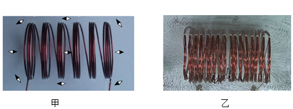
A．
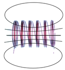
B．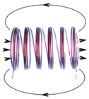
C．
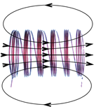
D．【分析】在磁体的外部，磁感线是从N极出来回到S极的，在磁体的内部，磁感线是从S极到N极；磁极间的相互作用规律：同名磁极相互排斥，异名磁极相互吸引。
【解答】解：根据异名磁极相互吸引可知，甲螺线管的左端为S极，右端为N极；通电螺线管周围的磁场与条形磁体的磁场相似；在通电螺线管的外部，磁感线是从N极出来回到S极的，在螺线管的内部，磁感线是从S极到N极，磁感线是一条封闭的曲线，故C正确。
故选：C。
【点评】本题考查了磁感线的方向，属于基础题。
11．甲、乙两支完全相同的试管，分别装有质量相等的液体。甲试管内液体的密度为ρ甲，乙试管内液体的密度为ρ乙。将两支试管放置在同一水平桌面上，甲试管竖直，乙试管倾斜，静止时，两试管内液体相平，液面距离桌面的高度为h，如图所示，液体对甲、乙两试管底的压强分别为p甲和p乙，则下列判断中正确的是（ ）
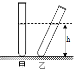
A．ρ甲＜ρ乙，p甲＜p乙B．ρ甲＜ρ乙，p甲＝p乙
C．ρ甲＞ρ乙，p甲＞p乙D．ρ甲＞ρ乙，p甲＝p乙
【分析】甲乙两种放置方法，V甲＜V乙，由液体质量相同，由ρ＝可得液体的密度关系，又因为h相同，根据液体压强公式p＝ρgh分析。
【解答】解：由图可知，甲容器中的液体体积要比乙容器小，因液体质量相同，由ρ＝可得甲液体的密度比乙液体密度大，即ρ甲＞ρ乙；
又因为两试管中液面等高，所以由液体压强公式p＝ρgh可知，p甲＞p乙，故C正确。
故选：C。
【点评】根据图中所装液体情形和质量相等找出液体密度关系是本题关键；利用控制变量法作定性分析。
12．测量工具为我们的工作和生活带来了极大的便利，而成功制作测量工其需要科技人员的创造性劳动，小慧通过自制密度计。体验动手与动脑相结合的劳动过程。她在粗细均匀的木棒一端缠绕一些细铜丝制成简易密度计（未标刻度）。该密度计放在水和酒精中时均竖直漂浮，露出液面的长度用L表示（如图所示），已知酒精的密度为0.8g/cm3，水的密度为1.0g/cm3。为了给简易密度计标刻度，小慧将该密度计放入酒精中，密度计静止时L为6cm，她在密度计上距顶端6cm处标记刻度线，该刻度线对应的密度值为0.8g/cm3。小慧将该密度计放入水中，密度计静止时L为8cm，她在密度计上距顶端8cm处标记刻度线，该刻度线对应的密度值为1.0g/cm3。利用上述数据，可计算出该密度计上对应密度值为1.25g/cm3的刻度线到密度计顶端的距离为（忽略铜丝的体积）（ ）
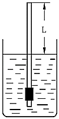
A．9.2cmB．9.6cmC．10cmD．10.4cm
【分析】设木棒长度为h，底面积为S，密度计重力为G，根据密度计漂浮在液面上时，F浮＝G，分别列出在酒精和水中的等式，求得木棒的长度，然后将其带入密度计上对应密度值为1.25g/cm3的刻度线时的等式即可求得答案。
【解答】解：设木棒长度为h，底面积为S，密度计重力为G，小慧将该密度计放入酒精中，密度计静止时L为6cm，ρ酒精＝0.8g/cm3＝0.8×103kg/m3，
由F浮酒精＝G，可得：ρ酒精gV排酒精＝G，
即[（h﹣0.06m）S]×0.8×103kg/m3×10N/kg＝G﹣﹣﹣﹣﹣①，
小慧将该密度计放入水中，密度计静止时L为8cm，ρ水＝1.0g/cm3＝1.0×103kg/m3，
由F浮水＝G，可得：
[（h﹣0.08m）S]×1.0×103kg/m3×10N/kg＝G﹣﹣﹣﹣﹣﹣﹣﹣②，
由①②可得，h＝0.16m；
设该密度计上对应密度值为1.25g/cm3的刻度线到密度计顶端的距离为L′，
则[（h﹣L′）S]×1.25×103kg/m3×10N/kg＝G﹣﹣﹣﹣﹣﹣﹣﹣③，
将h＝0.16m分别代入②和③，并将②③联立，
解得L＝0.096m＝9.6cm。
故选：B。
【点评】此题考查物体浮沉条件的应用和阿基米德原理的应用，主要是漂浮时F浮＝G的应用，同时考查学生的数学计算能力。
二、多项选择题(下到与题均有四个选项，其中符合题意的选项均多于一个。共6分，每题2分。每题选项全选对的得2分，选对或不全的得1分，有错选的不得分)
13．勤思考、爱交流的小琴对电磁的知识进行了总结，并与小文进行交流，小文认为小琴总结的结论有的正确，有的错误。小琴总结的下列结论中正确的是（ ）
A．导体中的负电荷在做定向移动时一定产生磁场
B．改变磁场的方向，通电导线在磁场中的受力方向就发生改变
C．闭合回路的导体在磁场中做切割磁感线运动时，导体中就产生感应电流
D．指南针在地磁场中静止时，指南针的N板受到地磁场的作用力
【分析】（1）电荷的定向移动形成电流；电流的周围存在磁场；
（2）通电导体在磁场中的受力方向与磁场方向、电流的方向有关；
（3）感应电流产生的条件：电路闭合，且闭合电路的部分导体切割磁感线运动；
（4）地球也是一个大磁体，它周围的磁场叫地磁场。
【解答】解：
A、导体中的负电荷在做定向移动时会产生电流，电流的周围存在磁场，故A正确；
B、改变磁场的方向，同时电流的方向改变，则通电导线在磁场中的受力方向不会发生改变，故B错误；
C、闭合回路的一部分导体在磁场中做切割磁感线运动时，导体中就产生感应电流，故C错误；
D、指南针在地磁场中静止时指示一定的方向，其原因是指南针的N板受到地磁场的作用力，故D正确。
故选：AD。
【点评】本题考查了产生感应电流的条件、通电导体在磁场中受力的方向与哪些因素有关、地磁场、电流的磁效应等知识，属于基础题。
14．如图所示，用滑轮组提升所受重力为900N的物体A，滑轮组绳子自由端在拉力F作用下竖直匀速移动了12m，同时物体A被竖直匀速提升了4m，用时40s，滑轮组的额外功是400J，下列说法中正确的是（ ）
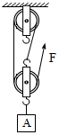
A．动滑轮所受的重力为100N
B．物体A上升的速度是0.3m/s
C．拉力F的功率是100W
D．滑轮组的机械效率是90%
【分析】（1）不计绳重和摩擦，提升动滑轮做的功为额外功，利用W额＝G动h求动滑轮重力；
（2）利用速度公式求物体上升的速度；
（3）利用W＝Gh求拉力做的有用功，拉力做的总功等于有用功加上额外功，又知道做功时间，利用P＝求拉力的功率；
（4）滑轮组的机械效率等于有用功与总功之比。
【解答】解：A、物体A被提高了h＝4m，由于动滑轮随物体一起运动，动滑轮提升的高度也是h＝4m，
不计绳重和摩擦，提升动滑轮做的功为额外功，
由W额＝G动h得动滑轮重力：
G动＝
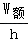
＝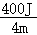
＝100N，但题目没有提供“不计绳重和摩擦”这一条件，动滑轮的重力不等于100N，故A错误；
B、物体上升的速度：v物＝＝
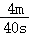
＝0.1m/s，故B错误；C、拉力做的有用功：
W有用＝Gh＝900N×4m＝3600J，
拉力做的总功：
W总＝W有用+W额＝3600J+400J＝4000J，
拉力的功率：
P＝
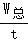
＝＝100W，故C正确；D、滑轮组的机械效率：
η＝
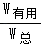
＝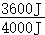
×100%＝90%，故D正确。故选：CD。
【点评】本题考查了使用滑轮组时有用功、总功、功率、机械效率的计算，要明确：不计绳重和摩擦，提升动滑轮做的功为额外功。
15．如图所示，质量一定的木块放在由同种材料制成的粗糙程度均匀的水平桌面上。木块在水平拉力F作用下从A点由静止开始运动，运动得越来越快；当木块到达B点时，撤去拉力F，木块持续滑动，运动得越来越慢，最后停在C点。下说法中正确的是（ ）
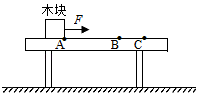
A．木块在AB段所受的摩擦力等于在BC段所受的摩擦力
B．木块在BC段运动得越来越慢，是由于木块受到的摩擦力越来越大
C．木块在BC段运动得越来越慢，是由于木块的机械能转化为内能，机械能逐渐减小
D．木块在AB段运动得越来越快，木块的机械能越来越大，机械能没有转化为内能
【分析】（1）滑动摩擦力的大小与压力大小、接触面的粗糙程度有关；
（2）力可以改变物体的运动状态；
（3）（4）克服摩擦做功，机械能转化为内能；机械能等于动能和势能的和。
【解答】解：
A、木块在AB段和BC段对桌面的压力不变，接触面的粗糙程度不变，所以所受的摩擦力不变，即木块在AB段所受的摩擦力等于在BC段所受的摩擦力，故A正确；
B、木块在BC段运动得越来越慢，是由于摩擦力改变了木块的运动状态，摩擦力的大小不变，故B错误；
C、木块在BC段运动得越来越慢，木块克服摩擦做功，机械能转化为内能，使得机械能逐渐减小，故C正确；
D、木块在AB段运动得越来越快是因为受到了拉力的作用，木块的高度和质量不变，重力势能不变，质量不变，速度变大，动能变大，所以木块的机械能越来越大；此过程中，木块与桌面之间存在摩擦，有一部分机械能转化为内能，故D错误。
故选：AC。
【点评】本题考查了影响滑动摩擦力大小的因素、力的作用效果、机械能的变化，难度不大。
三、实验探究题(共28分，16、17题各2分，18、20题各3分，19、21题各4分，22、23题各5分)
16．如图所示，铅笔的长度为 8.50 cm。
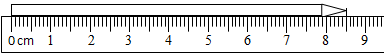
【分析】使用刻度尺测量物体长度时，首先要明确刻度尺的分度值，并确定是否从零刻度线量起；读数时视线与刻线相垂直，测量结果要估读到分度值的下一位。
【解答】解：此刻度尺的分度值为1mm，起始端从零开始，要估读到分度值的下一位，因此该物体的长度为8.50cm。
故答案为：8.50。
【点评】本题考查了刻度尺的正确读数，属于基础性题目，比较简单。
17．如图所示，体温计的示数为 36.5 ℃。
【分析】掌握体温计的基本结构，包括温度计的量程、分度值等，读数的时候要看液柱与哪个刻度对齐，然后根据刻度读出温度计的示数。
【解答】解：图中体温计的量程为35℃～42℃，一个大格表示1℃，里面有10个小格，它的分度值是0.1℃，因此它的读数为36℃+0.5℃＝36.5℃。
答案为：36.5
【点评】体温计是我们日常生活中常用的仪表，掌握使用体温计的结构及规则是考查重点。
18．（3分）小丽在中国科技馆“会发电的衣服”的展台区，进行了如下探究实装：用脚踩动踏步机踏板，带动发电纤维抖动，LED灯被点亮；增大踩动踏板的速度，发现被点亮的LED灯的数目增多。请你根据小丽的实验步骤及现象。写出她所探究的问题： LED灯点亮的数目和踩动踏板的速度有关吗？ 。
【分析】科学探究的过程：
提出问题→建立猜想和假设→设计实验→获取分析证据→得出结论→评价与交流。
【解答】解：观察到的现象：用脚踩动踏步机踏板，带动发电纤维抖动，LED灯被点亮；
获取分析证据：增大踩动踏板的速度，发现被点亮的LED灯的数目增多；
建立猜想和假设：LED 灯点亮的数目可能和踩动踏板的速度有关。
提出探究问题：LED 灯点亮的数目和踩动踏板的速度有关吗？
故答案为：LED 灯点亮的数目和踩动踏板的速度有关吗？
【点评】本题考查科学探究的过程，在探究过程中观察到现象，建立猜想和假设，进行验证猜想和假设，提出合理的问题。
19．（3分）小敏用托盘天平和量筒测量金属块的密度。她在调节天平时，发现指针偏向分度盘中央刻度线的右侧，如图甲所示，为使天平横梁水平平衡，她应将平衡螺母向 左 移动。天平平衡后，用天平测出金属块的质量为27g。然后，小敏将金属块用细线系好放进盛有50mL水的量筒中，量筒中的水面升高到如图乙所示的位置，则金属块的体积为 10 cm3。该金属块的密度为 2.7 g/cm3，根据下表中数据可判断组成该金属块的物质可能是 铝 。
物质 | 密度/（kg•m﹣3） |
银 | 10.5×103 |
钢 | 8.5×103 |
铁 | 7.9×103 |
铝 | 2.7×103 |
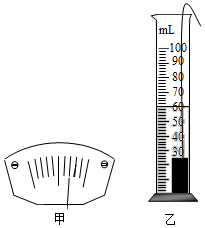
【分析】（1）将天平放在水平台上，把游码移到标尺左端的零刻度度线处，平衡螺母向上翘的一端调节。
（2）金属块用细线系好放进盛有水的量筒中，金属块的体积等于金属块浸没前后两次的体积差；然后根据公式
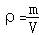
求出其密度，与表中数据比较即可。【解答】解：
（1）在调节天平平衡时，发现指针偏向分度盘中央刻度线的右侧，说明天平的左端上翘，则平衡螺母应向上翘的左端调节，使指针对准分度盘中央刻度线；
（2）图乙中量筒的分度值为2mL，水和金属块的总体积为60mL，
则金属块的体积：V＝60mL﹣50mL＝10mL＝10cm3，
金属块的密度为：＝
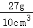
＝2.7g/cm3＝2.7×103kg/m3根据表中数据可判断组成该金属块的物质可能铝。
故答案为：（1）左；（2）10；（3）2.7； （4）铝。
【点评】本题考查了固体密度的测量，只要熟练掌握天平的正确使用方法、固体体积的测量方法以及密度公式的应用就能解答。
20．（4分）在探究水沸腾过程中温度随加热时间变化的特点时，小宇应通过观察 水中是否产生大量气泡 判断水是否沸腾。待水沸腾后，小宇测量并记录的实验数据如下表所示，请你根据表中的数据归纳出实验结论： 水沸腾时，要不断吸热，温度保持不变 。
加热时间/min | 0 | 0.5 | 1 | 1.5 | 2 | 2.5 | 3 |
温度/℃ | 99 | 99 | 99 | 99 | 99 | 99 | 99 |
【分析】（1）水沸腾前，产生少量的气泡，气泡上升时逐渐变小；水沸腾后，产生大量气泡，气泡上升时逐渐变大，上升至水面破裂。
（2）分析表中数据得出结论。
【解答】解：（1）水沸腾前，可观察到水中产生少量的气泡，气泡上升时逐渐变小；水沸腾时，可观察到水中产生大量的气泡，上升至水面破裂；
（2）由表中数据可得结论为：水沸腾时，要不断吸热，温度保持不变。
故答案为：水中是否产生大量气泡；水沸腾时，要不断吸热，温度保持不变。
【点评】本题考查实验探究水沸腾时温度变化的特点，要求学生能根据实验现象判断水是否沸腾，并能根据实验数据得出实验结论，难度一般。
21．（4分）在“重阳节”到来之际，小航送给奶奶一个放大镜，奶奶借助这个放大镜能够细致欣赏邮票上的图案，如图1所示。此时奶奶看到的是一个 正立 、放大的虚像。为了模拟上述现象，小航利用一个焦距为10cm的凸透镜、蜡烛和光具座等器材进行实验。他先将蜡烛固定在光具座上50cm刻线处，如图2所示，接下来他应将凸透镜放置在光具座上的A、B、C三点中的 C 点处，然后再从透镜的 左 （选填“左”或“右”）侧用眼睛观察蜡烛烛焰的像。该像 不能 （选填“能”或“不能”）用光屏承接到。
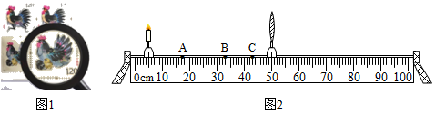
【分析】（1）当物距小于焦距时，物体通过凸透镜成正立、放大的虚像；
（2）凸透镜成像规律：物距小于焦距成正立、放大的虚像。
物距大于一倍焦距小于二倍焦距成倒立、放大的实像。
物距等于二倍焦距成倒立等大实像。
物距大于二倍焦距成倒立、缩小的实像。
虚像不能承接在光屏上。
【解答】解：奶奶借助这个放大镜能够细致欣赏邮票上的图案，如图1所示。此时奶奶看到的是一个正立、放大的虚像；
小航利用一个焦距为10cm的凸透镜、蜡烛和光具座等器材进行实验。他先将蜡烛固定在光具座上50cm刻线处，如图2所示，物距小于焦距成正立、放大的虚像，接下来他应将凸透镜放置在光具座上的A、B、C三点中的C点处，然后再从透镜的左侧用眼睛观察蜡烛烛焰的像。虚像不能用光屏承接到。
故答案为：正立；C；左；不能。
【点评】此题探究凸透镜成像的规律实验，考查了对凸透镜的放大镜成像规律的应用，一定要熟练掌握凸透镜成像特点与物距之间的关系。
22．（5分）小圆想探究通过导体的电流与导体的电阻之间的关系，他利用干电池、电流表、电压表、多个阻值不同且已知的定值电阻、开关及导线，设计了如图所示的电路。实验中，他将定值电阻R接入电路中，读出相应的电流表的示数并观察电压表的示数，记录实验数据。将R换为不同阻值的另一个电阻后，小圆观察到电压表的示数增大了。小圆意识到自己的实验设计不能实现探究目的。
（1）请你写出小圆的实验设计不能实现探究目的的原因： 没有保持电阻两端电压不变 ；
（2）请你画出能够实现探究目的的电路图（可以添加适当的实验器材）；
（3）依据你设计的电路图，针对小圆不能实现探究目的的原因，写出操作的方法。
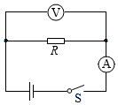
【分析】（1）在探究电流与电阻关系的实验中，由于电压和电阻都会对电流产生影响，所以我们采用控制变量法来进行研究，即研究电流与电阻关系时要控制电压一定；
（2）研究电流与电阻关系时通过移滑片使定值电阻两端的电压保持不变。
【解答】解：（1）由题意可知，小圆的实验设计不能实现探究目的的原因：没有保持电阻两端电压不变
（2）要能够实现探究目的，需要在电路中串联一个滑动变阻器，通过移滑片使定值电阻两端的电压保持不变，电路图如图所示：
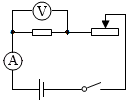
（3）①开关断开，将滑动变阻器调至最大处，电压表和电流表调零，按电路图连接电路；
②闭合开关，移动滑动变阻器到适当位置，读出电压表和电流表的示数，把U、I1和R1记录到表格中；
③断开开关，更换不同的定值电阻，将滑动变阻器调至阻值最大处，闭合开关，调节滑片P，使电压表的示数仍为U，记录I2、R2；
④仿照步骤③再做几次实验，把电流和电阻记录在表格中。
故答案为：（1）没有保持电阻两端电压不变；
（2）如下图：
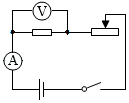
；（3））①开关断开，将滑动变阻器调至最大处，电压表和电流表调零，按电路图连接电路；
②闭合开关，移动滑动变阻器到适当位置，读出电压表和电流表的示数，把U、I1和R1记录到表格中；
③断开开关，更换不同的定值电阻，将滑动变阻器调至阻值最大处，闭合开关，调节滑片P，使电压表的示数仍为U，记录I2、R2；
④仿照步骤③再做几次实验，把电流和电阻记录在表格中。
【点评】本题考查了实验分析，探究电流与电压、电阻关系实验，要采用控制变量法，应用控制变量法分析即可正确解题。
23．（5分）小梦在初三总复习时认识到，水吸收的热量可以定量测量了，于是她想重新设计一个实验证明，水吸收热量的多少与水升高的温度有关。如图是小梦已经设计好的电路，其中保温杯中装有质量一定的水、阻值为5Ω的电阻丝R和数字温度计的测温探头，请利用该电路及秒表，帮助小梦完成实验设计。请你写出主要实验步骤，画出实验数据记录表。
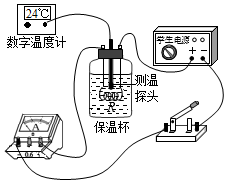
【分析】（1）研究水吸收热量的多少与水升高温度有关，根据Q＝cm△t，控制比热容和质量一定，比较吸收热量与温度变化的关系。
（2）转化思想：电阻通电后产生的热量，通电时间越长，产生的热量越多，产生的热量传递给水，水吸收热量温度升高越多。
【解答】解：实验步骤：①用温度计测出水的初温t0，记录于表格中；
②闭合开关，分别记录1min、3min；5min、7min、……温度计的示数，并记录于表格中；
③根据Q＝I2Rt计算相同时间电阻产生的热量；
④比较产生的热量与升高温度的关系。
记录表如下：
【点评】本题借助电路中电阻发热特点转化为水吸收的热量来研究水吸收热量与升高温度的关系，注意分析清楚实验思路，实验步骤简单明了，难度偏大。
四、科普阅读题(共4分)
24．（4分）请阅读《华夏之光—圭表》并回答问题：
华夏之光——圭表
我国古代的天文观测一直居于世界领先地位，天文学家们发明了许多先进的天文观测仪器，其中圭表就是典型的代表。圭表（如图1所示）包括圭和表两部分，正南北方向平放的尺，叫作圭，直立在平地上的标竿或石柱、叫作表，圭和表相互垂直。
战国以前的天文学家已丝能够利用水面来校正圭，使其水平，使用铅垂线来校正表，使其与圭相互垂直。
依据圭表正午时表影长度的变化，就能推算出二十四节气，依据表影长短的周期性变化，就能确定一回归年的天数，由于日光散射和漫反射的影响，早期圭表的表影边缘模糊不清，影响了测量表影长度的精度。
为了解决上述问题，元代天文学家郭守敬采取理论与实践相结合的科学方法，对圭表进行了一系列政进与创新。他将表的高度增加，并且在表顶加一根架空的横梁，使表高变为传统表高的五倍。这样，测量时，把传统的确定表影端的位置变为确定梁影中心的位置、提高了测量影长的精度。
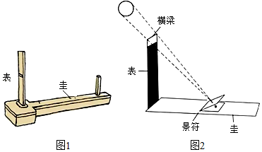
郭守敬又利用小孔成像的原理，发明了景符，利用景符可以在圭面上形成太阳和梁的清晰像（如图2所示），这样就可以精确的测量表的影长了。这些措施成功解决了圭表发明以来，测影时“虚景之中考求真实”的困难。
以圭表为代表的我国古代的科技成果，像一颗颗璀璨的明珠，闪耀着智慧的光芒，激励着我们攀登新的科技高峰。
请根据上述材料，回答下列问题：
（1）请写出我国古代天文学家保证圭和表相互垂直的措施，并解释为什么这种措施可以保证圭和表是相互垂直的。
（2）郭守敬的改进与创新措施解决了早期圭表的什么问题？
（3）除了圭表，请你再列举一个我国古代天文观测仪器。
【分析】（1）重力的方向是竖直向下的，水面是水平的；
（2）早期圭表的表影边缘模糊不清，影响了测量表影长度的精度；
（3）我国古代天文观察仪器有日晷、浑天仪、水运仪等。
【解答】答：
（1）用水面来矫正圭，使其水平，利用重垂线来矫正表，使其与圭相互垂直，这是因为重垂线是利用重力方向的竖直向下作用的，竖直向下与水平面互相垂直；
（2）测量时，把传统的确定表影端的位置变为确定梁影中心的位置，解决了早期圭表的表影边缘模糊不清的问题，提高了测量影长的精度；
（3）我国古代天文观察仪器还有日晷、浑天仪、水运仪等。
【点评】本题考查了光的直线传播、重力的方向的应用，读懂文中内容是解题的关键。
五、计算题(共8分，25、26题各4分)
25．（4分）如图所示的是某款家用电热器的简化电路，R1、R2为阻值一定的电热丝。该电热器接入电压恒为220V的电路中。电热器高温挡的功率为990W，低温挡的功率为110W。
求：
（1）低温挡时通过电路的电流；
（2）电热丝R2的阻值。
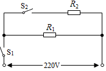
【分析】（1）电热器分高温挡和低温挡，分析电路R2和R1并联；当处于低温挡时，开关S1闭合，S2断开，R1工作；当处于高温挡时，S1和S2闭合，R1和R2并联；
求低温挡的电流，根据P＝UI可得；
（2）根据R1和R2并联，R2的功率P2＝P总﹣P1，再根据R2＝
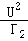
可得。【解答】（1）当S1闭合，S2断开时，电热器处于低温挡，简化电路如图所示
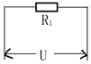
低温挡功率P1＝110W，故I1＝
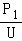
＝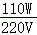
＝0.5A；（2）当S1，S2都闭合时，电热器处于高温挡，简化电路如图所示
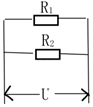
电阻R2的功率P2＝P总﹣P1＝990W﹣110W＝880W
电阻R2＝
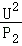
＝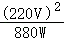
＝55Ω。答：（1）低温挡时通过电路的电流为0.5A；
（2）电热丝R2的阻值为55Ω。
【点评】本题考查电路分析即电功率的相关计算，属于常规题目，难度不大。
26．（4分）为了说明分子之间有引力，小明在实验室用两个紧压在一起的铅柱做实验，如图所示，铅柱A和铅柱B所受的重力均为2N，两个铅柱接触面的面积为3cm2，当悬挂重物所受的重力为20N时，两个铅柱没有被拉开。于是，小明认为这个实验说明了分子之间存在引力。小华观测到该实验室的大气压为1×105Pa，于是她认为两个铅柱之所以没被拉开，是因为大气压的作用。请你利用所学知识和上述数据，判断小明做的铅柱实验能否说明分子之间存在引力。请写出计算、推理过程和结论。
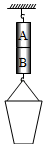
【分析】根据题意分析知道：铅块B受到四个力，向上的大气压力、分子引力，向下的铅块本身重力、重物对铅块的拉力。而且铅块处于平衡状态，向上的力和向下的力总大小相等，根据题目所提供数据算出大气压力、铅块本身重力、重物对铅块的拉力，进行比较分析可结论。
【解答】解：以B为对象受力分析如下图
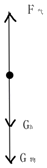
①F气＝P气S＝1×105Pax3×10﹣4m2＝30N
②GB+G物＝2N+20N＝22N
③因为F气＞GB+G物；仅靠大气压也能使铅块无法被拉开，所以小明的实验无法证明分子间存在引力。
【点评】解答物理力学问题受力分析非常关键。